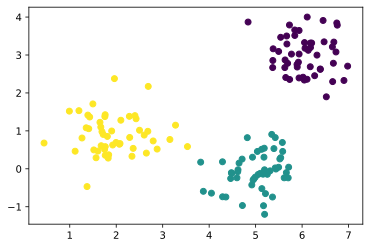
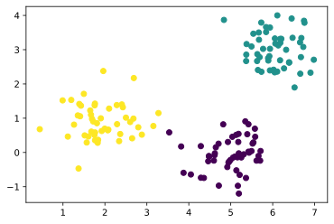
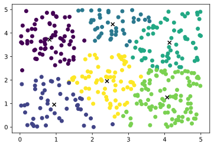
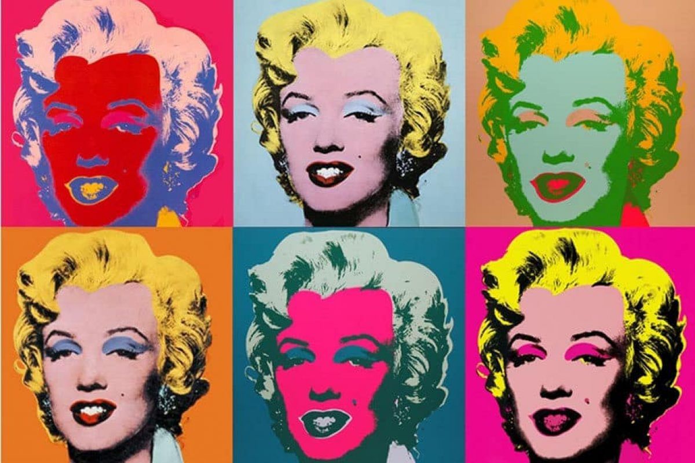
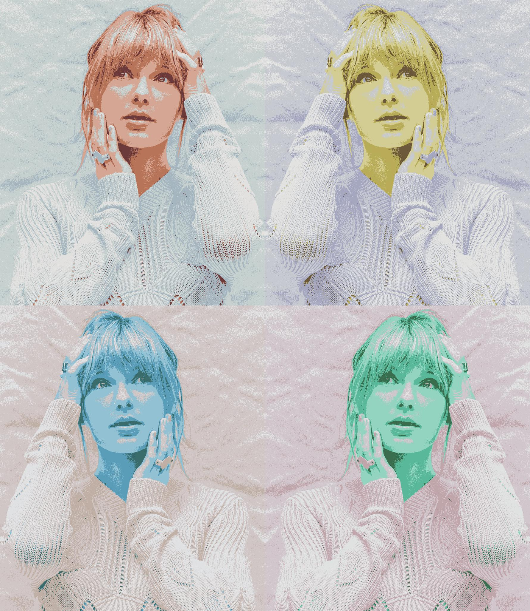
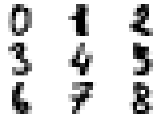
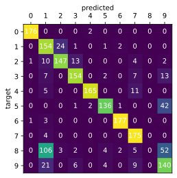
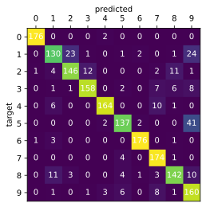

K-means clustering – Lloyd’s algorithm
In this article, we will take a look at k-means clustering. We will write an implementation of Lloyd’s algorithm, which is a naive (better algorithms are known, however, Lloyd’s algorithm is simple and very common) heuristic approach to k-means clustering. I would also like to cover some applications of k-means and some extensions that improve the algorithm.
First of all, let’s talk about what k-means clustering is and what problems it solves.
Applications
K-means has applications in data analysis, image processing and many more. For example, it can be used to create a recommendation system by separating customers (or products) into groups (clusters) and then recommending products based on the cluster the customer (or the product) belongs to (multiple clusterings over different features are built). It can be also used to gain insights over data.
Possible uses in image processing include image segmentation, color reduction or dithering. We will get to color reduction later.
It can also be used for unsupervised classification, for instance in problems where we know the number of classes, but it is difficult to get a large number of labels for our data.
So what is K-means clustering?
K-means clustering is an unsupervised learning technique used to partition -dimensional data points into clusters (yes, the same as in K-means).1 is a parameter that needs to be picked depending on the problem. There are methods to choose a good for a problem where it is unclear, but that is beyond the scope of this article.2 Data points are assigned to clusters based on their distances from centroids (or means). The goal is to minimize the within-cluster variance (also called inertia or within-cluster sum of squares)1 It is defined as
where is the number of data points and is the set of centroids.1 However, it is not easy to find the solution with minimal inertia, actually, it is NP-hard8, so the purpose of Lloyd’s algorithm is to approximate the best possible locations of the centroids.
Lloyd’s algorithm
The algorithm works iteratively – first, it creates the centroids with some initialization method,2The initial centroids could be chosen randomly but the algorithm would not perform very good. Thus, the initial centroids are chosen from the set of the data points or more advanced methods (such as k-means++) are used. We will revisit k-means++ in the Improvements section then it assigns every data point to the closest centroid. This way, they are split into clusters. The next step is to move each centroid to the mean of the matching cluster, points are reassigned and the whole process is repeated.12

After some amount of iterations, the algorithm will converge, however it can get stuck in a local optimum and that’s why better implementations run it multiple times with different initial conditions and pick the best result.1 We will implement this in the Improvements section.
To summarize:
- Choose initial centroids
- Assign every sample to the closest centroid
- Move the centroids to the means of their corresponding clusters
- Repeat steps 2-3 until the algorithm converges or reaches a maximum number of steps.
Implementation
Our implementation will be simple and slow, with the sole purpose of understanding the algorithm by implementing it.
Sample data
At first, we create three clusters of random sample data in two dimensions.
%matplotlib inline
%config InlineBackend.figure_format = "svg"
import numpy as np
import matplotlib.pyplot as plt
from numpy.random import default_rng
plt.rc("axes", facecolor=(1, 1, 1, 0)) # Transparent plot background for dark mode viewers
rng = default_rng(0)
datapoints = np.zeros((150, 2)) # 90 datapoints with 2 dimensions
labels = np.zeros(150,)
# First cluster
datapoints[:50, 0] = rng.normal(6, 0.5, (50,))
datapoints[:50, 1] = rng.normal(3, 0.5, (50,))
labels[:50] = 0
# Second cluster
datapoints[50:100, 0] = rng.normal(5, 0.5, (50,))
datapoints[50:100, 1] = rng.normal(0, 0.5, (50,))
labels[50:100] = 1
# Third cluster
datapoints[100:, 0] = rng.normal(2, 0.5, (50,))
datapoints[100:, 1] = rng.normal(1, 0.5, (50,))
labels[100:] = 2
# Plot it
plt.scatter(datapoints[:, 0], datapoints[:, 1], c=labels)
plt.show()

Initialization
Let’s create an initialization function that chooses the initial centroids randomly from the data points. Our initialization function also won’t pick a data point twice, because that would cause a cluster to degenerate and the data points would be clustered into less than clusters. (this could also happen if the dataset contains duplicates)3
def init_random(k, dataset, rng=default_rng()):
"""Choose `k` centroids from the supplied `dataset` randomly"""
return dataset[rng.choice(dataset.shape[0], size=k, replace=False)]
The predict function
Next, we write a function that assigns points from a dataset to corresponding clusters given the centroids. We will need a function cluster_dist to compute the distance matrix of every sample to every cluster.3Because we are using numpy, computing a distance matrix is faster than using a python loop to find the closest centroid. numpy is written in C and takes advantage of many optimizations, such as SIMD
def cluster_dist(centroids, dataset):
"""
Compute the squared distance from every cluster
for every sample in `dataset`.
Return a distance matrix with shape (n, k),
where n is the number of samples in `dataset`.
"""
dist = np.repeat(dataset[:, np.newaxis, :], centroids.shape[0], axis=1)
dist -= centroids
return (dist**2).sum(axis=2)
def predict(centroids, dataset):
"""
Find the corresponding cluster indices
given the `centroids` for every datapoint from `dataset`
"""
return cluster_dist(centroids, dataset).argmin(axis=1)
kmeans_step
Now we create kmeans_step which performs one iteration of the algorithm.
def kmeans_step(centroids, dataset):
"""Perform a single iteration of the algorithm. Return updated centroids."""
classes = predict(centroids, dataset)
return np.array([dataset[classes==cls].mean(axis=0) for cls in range(len(centroids))])
Training function
It’s time to write the generator kmeans_base. It yields and updates the centroids for every step of training on dataset.
from itertools import islice
def kmeans_base(k, dataset, init=init_random, rng=default_rng()):
"""
A generator that fits `k`-means on `dataset`.
Centroids are initialized with `init`.
"""
centroids = init(k, dataset, rng=rng)
while True:
yield centroids
centroids = kmeans_step(centroids, dataset)
until_convergence and until_max_iter take from the generator while certain conditions are satisfied.4 We use these functions to create a combined function kmeans_iter.
def until_convergence(it, tol=1e-4):
"""
Yield values from `it` until the converge (i.e. stop changing)
within tolerance `tol`.
"""
prev = None
cur = next(it)
while prev is None or np.linalg.norm(cur-prev) > tol:
yield cur
prev = cur
cur = next(it)
def until_max_iter(it, max_iter=300):
"""
Yield at most `max_iter` values from `it`.
`max_iter` can be None, therefore no limit.
"""
return islice(it, 0, max_iter)
def kmeans_iter(k, dataset, tol=1e-4, max_iter=300, init=init_random, rng=default_rng()):
"""
Fits `k`-means on `dataset` until it converges
within tolerance `tol` or reaches `max_iter`.
Centroids are initialized with `init`.
Yields centroids every iteration.
"""
yield from until_max_iter(until_convergence(
kmeans_base(k, dataset, init=init, rng=rng),
tol=tol),
max_iter=max_iter)
Finally, the main kmeans function, which fits k-means on a given dataset and returns the final centroid locations.
def kmeans(k, dataset, tol=1e-4, max_iter=300, init=init_random, rng=default_rng()):
"""
Fits `k`-means on `dataset` until it converges
within tolerance `tol` or reaches `max_iter`.
Centroids are initialized with `init`.
Return the trained centroids.
"""
for x in kmeans_iter(k, dataset, tol=1e-4, max_iter=300, init=init, rng=rng):
pass
return x
Running on test data
model = kmeans(3, datapoints, rng=rng)
labels_pred = predict(model, datapoints)
plt.scatter(datapoints[:, 0], datapoints[:, 1], c=labels_pred)
plt.show()

Animation
Now let’s create an animation of the training process. This time we will just use uniformly distributed random points.4One interesting observation about running k-means on random points is that you can see the underlying Voronoi diagram arise.
from matplotlib.animation import FuncAnimation
from IPython.display import HTML
rng = default_rng(0)
datapoints = rng.uniform(0, 5, (400, 2))
steps = list(kmeans_iter(6, datapoints, rng=rng))
def frame(n):
plt.cla()
model = steps[n]
plt.scatter(datapoints[:, 0], datapoints[:, 1], c=predict(model, datapoints))
plt.scatter(model[:, 0], model[:, 1], marker="x", c="black")
anim = FuncAnimation(plt.figure(), frame, frames=len(steps), interval=100)
HTML(anim.to_html5_video())

Applying it
Now let’s try applying our k-means to some problems. Of course, our implementation of k-means is very clumsy and these problems would be solved better using a different one, but in this article we will use our implementation to see if it is useful enough. In the real world, you should probably use (for example) sklearn.cluster.KMeans instead.
Color reduction
The first problem we will try to solve is color reduction. This can be done for viewing on some medium that does not support enough colors, for compression or for artistic purposes.
The first step we take is to fetch some image. Image taken from 5.
import imageio
img = imageio.imread("photo.jpg")
print(img.shape)
(4288, 2848, 3)
Every pixel can be represented as a 3-dimensional vector. The goal is to cluster them, so we find the optimal colors to use, which will be the centroids. Thus, the number of clusters, , will be equal to the number of reduced colors.
We could cluster all the colors in the image, but our implementation is too slow for that. Instead, we sample a random subset of the pixels and cluster them. Then we decide the cluster for every pixel in the image and use it’s centroid as color.
NUM_COLORS = 8
SAMPLE_PIXELS = 100000
rng = default_rng(0)
h, w, c = img.shape
assert c == 3
normalized = img / 255
pixels = np.reshape(normalized, (h*w, c))
sampled_pixels = pixels[rng.integers(0, h*w, (SAMPLE_PIXELS,))]
model = kmeans(NUM_COLORS, sampled_pixels, rng=rng)
reduced_img = (model[predict(model, pixels)].reshape((h, w, c)) * 255).astype(np.uint8)
imageio.imwrite("reduced.jpg", reduced_img)
And that’s our image using only eight colors. And it’s still pretty recognizable.
Andy Warhol inspired pictures

I picked two famous people of the present day, Taylor Swift and Barack Obama, used k-means to reduce the colors and changed the hue in a few different ways.

Classifying handwritten digits
This time we will try applying k-means for unsupervised recognition of the Handwritten Digits Data Set from UCI Machine Learning Repository.7 We will use a scikit-learn convenience function to load the dataset.
There are 1797 digits and every digit is pixels. Each pixel can have values 0-15.
from sklearn.datasets import load_digits
digits = load_digits()
print("Shape:", digits.data.shape)
print("Format:", digits.data[0])
fig, axs = plt.subplots(3, 3)
for i, ax in enumerate(axs.reshape(-1)):
ax.imshow(digits.data[i].reshape(8, 8), cmap="gray_r")
ax.axis("off")
Shape: (1797, 64)
Format: [ 0. 0. 5. 13. 9. 1. 0. 0. 0. 0. 13. 15. 10. 15. 5. 0. 0. 3.
15. 2. 0. 11. 8. 0. 0. 4. 12. 0. 0. 8. 8. 0. 0. 5. 8. 0.
0. 9. 8. 0. 0. 4. 11. 0. 1. 12. 7. 0. 0. 2. 14. 5. 10. 12.
0. 0. 0. 0. 6. 13. 10. 0. 0. 0.]

The next step is to cluster the digits with k-means for (ten types of digits).
CLASSES = 10
for i, model in enumerate(kmeans_iter(CLASSES, digits.data, rng=default_rng(0))):
pass
print(f"Converged after {i} steps.")
Converged after 14 steps.
Because our classification was unsupervised, we need to find out which cluster belongs to which class. We will determine the cluster for all of the digits and find the most common digit among those clusters using mode.
from scipy.stats import mode
def assign_labels(clusters, target, num_classes):
cluster_labels = np.zeros((num_classes,)) # A mapping (cluster_id -> label)
for cluster_idx in range(num_classes):
real_labels = target[clusters == cluster_idx]
# The most common real label in the cluster
cluster_labels[cluster_idx] = mode(real_labels).mode
return cluster_labels
clusters = predict(model, digits.data)
cluster_labels = assign_labels(clusters, digits.target, CLASSES)
predicted = cluster_labels[clusters] # Map the clusters to corresponding labels
correct = (predicted == digits.target).sum()
total = len(predicted)
accuracy = correct/total
print(f"Correctly classified {correct} out of {total}.\nAccuracy: {accuracy}")
Correctly classified 1424 out of 1797.
Accuracy: 0.7924318308291597
An accuracy of 79% is pretty good, if you take in account that the classifier is completely unsupervised and achieved this score only by grouping the digits into 10 clusters.
To get more insights, we can generate a confusion matrix. A confusion matrix tells us how many samples for every label got classified as every other label.
def confusion_matrix(predicted, target, num_classes):
"""Plot a confusion matrix using matplotlib."""
mat = np.zeros((num_classes, num_classes), dtype=np.int)
ax = plt.axes()
for i in range(num_classes):
for j in range(num_classes):
mat[i, j] = ((target == i) & (predicted == j)).sum()
text = ax.text(j, i, mat[i, j], ha="center", va="center", color="w")
ax.set_xlabel("predicted")
ax.set_ylabel("target")
ax.set_xticks(np.arange(10))
ax.set_yticks(np.arange(10))
ax.xaxis.tick_top()
ax.xaxis.set_label_position("top")
ax.imshow(mat)
confusion_matrix(predicted, digits.target, CLASSES)

As you can see, the k-means classifier has some trouble distinguishing 1 and 8.
Improvements
There are many improvements, extensions and modifications of the k-means algorithm. Let’s take look at the most common ones.
Multiple runs
The algorithm can get stuck in a local optimum. To improve this, we can run it multiple times with different initial conditions and pick the best result (with minimal within-cluster variance).
def kmeans_multiple(k, dataset, n_init=10, tol=1e-4, max_iter=300,
init=init_random, rng=default_rng()):
"""
Run `k`-means on `dataset` `n_init` times
until convergence within `tol`
or until it reaches `max_iter` iterations.
Then we pick the result with minimal within-cluster variance.
"""
results = (kmeans(k, dataset,
tol=tol, max_iter=max_iter,
init=init, rng=rng) for _ in range(n_init))
objectives = (cluster_dist(r, dataset).min(axis=1).sum() for r in results)
return min(zip(objectives, results))[1]
Now let’s train the modified algorithm on the handwritten digit recognition problem and evaluate it.
model = kmeans_multiple(CLASSES, digits.data, rng=default_rng(0))
def evaluate_digits(model):
clusters = predict(model, digits.data)
cluster_labels = assign_labels(clusters, digits.target, CLASSES)
predicted = cluster_labels[clusters]
correct = (predicted == digits.target).sum()
total = len(predicted)
accuracy = correct/total
print(f"Correctly classified {correct} out of {total}.\nAccuracy: {accuracy}")
confusion_matrix(predicted, digits.target, CLASSES)
evaluate_digits(model)
Correctly classified 1563 out of 1797.
Accuracy: 0.8697829716193656

That’s nearly an 8% improvement achieved only by running multiple times with different setups. The model is now better at separating 1s and 8s. 87% is a pretty good score.
k-means++
k-means++ is different initialization method. k-means++ chooses the first centroid randomly and then successively selects rest of the centroids. The centroids are picked randomly from the data points, however with probabilty proportional to the squared distance from the nearest already chosen centroid.8
def init_kmeanspp(k, dataset, rng=default_rng()):
centroids = np.empty((k, dataset.shape[1]))
centroids[0] = init_random(1, dataset, rng=rng)[0]
for i in range(1, k):
w = cluster_dist(centroids[:i], dataset).min(axis=1)
w /= w.sum()
centroids[i] = dataset[rng.choice(np.arange(dataset.shape[0]), p=w)]
return centroids
In some cases kmeans++ significantly improves the final error. k-means++ initialization is slower, but, in the end, it reduces computation time, because the algorithm converges in less iterations.8 To test this, we will compare init_random and init_kmeanspp on our color reduction problem, since it is the most time expensive problem covered.
for i, model in enumerate(kmeans_iter(NUM_COLORS, sampled_pixels, rng=default_rng(0))):
pass
print(f"init_random: Converged after {i} steps.")
for i, model in enumerate(kmeans_iter(NUM_COLORS, sampled_pixels, init=init_kmeanspp, rng=default_rng(0))):
pass
print(f"kmeans++: Converged after {i} steps.")
init_random: Converged after 135 steps.
kmeans++: Converged after 89 steps.
Conclusion
I’ve been reading about k-means for some time and thought that I could understand it better by writing about it. I hope this article could be a useful introduction to k-means for somebody like me.
-
scikit-learnUserguide, chapter 2.3. Clustering [https://scikit-learn.org/stable/modules/clustering.html#k-means] ↩↩↩↩ -
Jake VanderPlas, Python Data Science Handbook [https://jakevdp.github.io/PythonDataScienceHandbook/05.11-k-means.html] ↩↩
-
https://stackoverflow.com/questions/24919346/mini-batch-k-means-returns-less-than-k-clusters ↩
-
Inspired by Joel Grus’ awesome talk Learning Data Science Using Functional Python ↩
-
Source: https://en.wikipedia.org/wiki/Voronoi_diagram#/media/File:Euclidean_Voronoi_diagram.svg ↩
-
Dua, D. and Graff, C. (2019). UCI Machine Learning Repository [http://archive.ics.uci.edu/ml]. Irvine, CA: University of California, School of Information and Computer Science. ↩
-
Wikipedia, k-means++ https://en.wikipedia.org/wiki/K-means%2B%2B ↩↩↩
{kind=link}